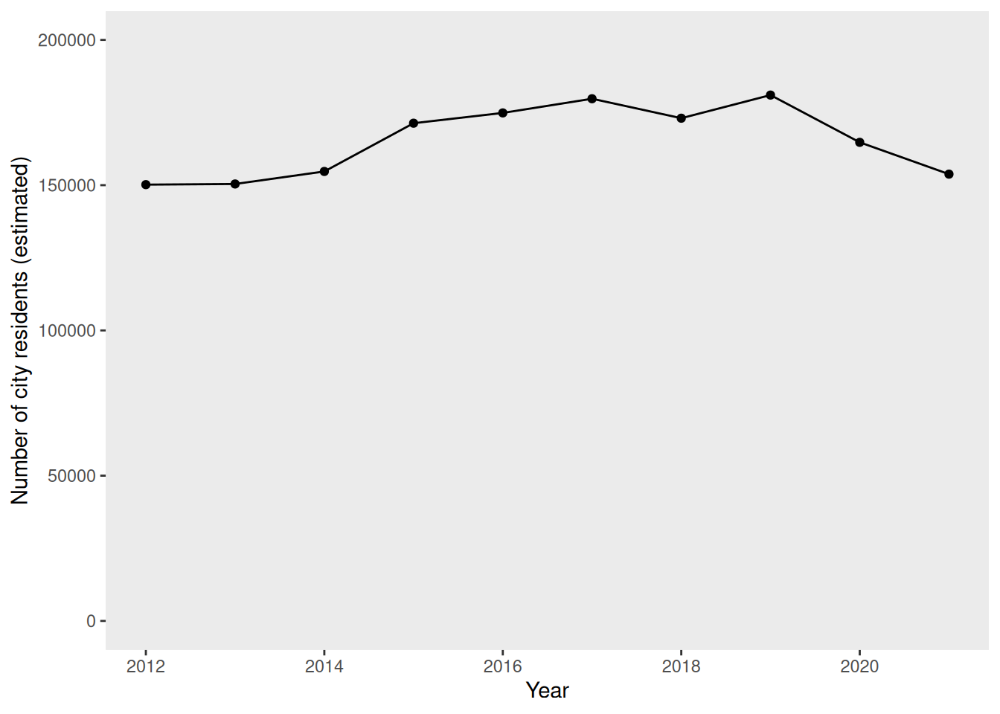
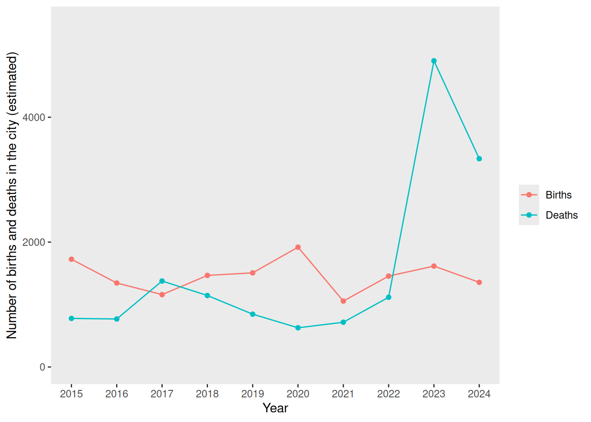
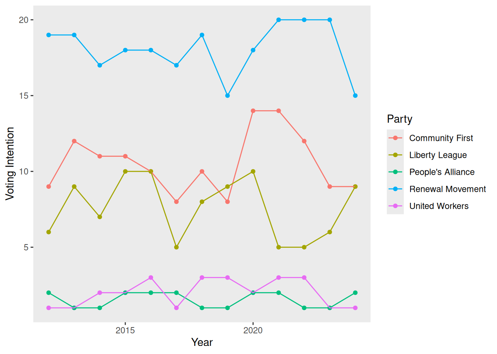
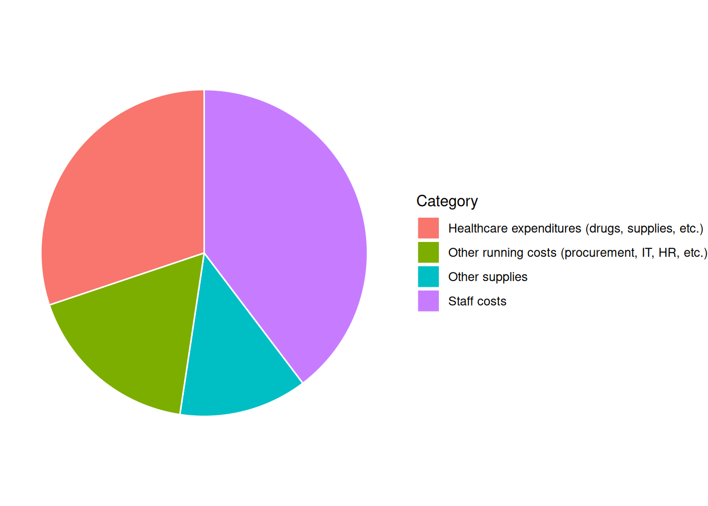

3 Group A
Inverkeld Courier
Breaking News
Worries Over Possible Outbreak of Legionellosis in Inverkeld
23 February, 2026

Anxiety mounts in Inverkeld as health officials investigate a potential outbreak of Legionellosis, raising alarm bells across the region. Though yet to be formally confirmed as a pandemic, suspicions have intensified following a recent startling surge in patients presenting with symptoms indicative of Legionellosis.
Legionellosis is caused by Legionella pneumophila. It is typically transmitted through the inhalation of contaminated water droplets, such as those from air conditioning systems or hot tubs. Symptoms include fever, chills, cough, muscle aches, and headaches. Residents of Inverkeld experiencing any of these symptoms are advised to contact their GP or dial 111 for health advice.
In a press release, the director of the Queen Rose in Inverkeld noted a surprising uptick in individuals reporting symptoms consistent with those associated with Legionellosis. Anxieties were first raised when the local GPs began reporting an unusual increase in patients with symptoms of Legionellosis. While investigations are still ongoing, the possibility of a pandemic outbreak dominates, prompting concern from health agencies.
In response to the increasing concerns, health officials have begun several emergency protocols, and Inverkeld have convened an Emergency Pandemic Response Team, which will be meeting on 2026-02-27 and attempting to find solutions that will stop the spread of the pandemic in Inverkeld.
The First Minister assured residents that authorities are leaving no option unexplored in their efforts to safeguard public health, and furthermore urged residents to remain vigilant and cooperate with health directives from the Inverkeld City Council. A statement released by the First Minister’s office read: “While we cannot confirm the presence of an outbreak right now, we are responding to this issue with the highest degree of seriousness.”
The people in Inverkeld have already begun to worry the possibility of a pandemic; potential consequences such as school closures, economic repercussions, and strain on healthcare resources, have sparked apprehension among residents, underscoring the need for swift and decisive action.
Contact Information for Further Updates:
More information will be posted on the Inverkeld website as the situation develops: https://www.InverkeldCouncil.co.uk
The Inverkeld Emergency Pandemic Response Team can be contacted on +44 01463 5271 9000 or at pandemic_response@Inverkeld.co.uk
About the Author:
Cannon Eppard is a health correspondent at the Inverkeld Courier, specializing in public health and safety issues.He can be contacted at ce2122@InverkeldCourier.com.

Inverkeld was granted city status in 1811. Located near Loch Rannoch, Inverkeld is noted for its ancient oak forests and nature reserve. Major industries in the city include digital media, energy, and agriculture.
Inverkeld is well-served by public transport: there are 2 bus companies operating routes that cover the city and outlying areas, and road links to other major cities (the A87 to Inverness and the the A60 to Fraserburgh.) Inverkeld is further connected to regional towns and villages by rail services from the Inverkeld railway station. Inverkeld is also served by Inverkeld Airport, which is 3 miles from the city centre and which offers daily flights to Copenhagen, Geneva, and Düsseldorf.
Notable buildings in the city include Inverkeld Castle, Inverkeld Cathedral, and Fairhaven Library. Inverkeld also has several museums and art galleries and a number of architectural landmarks. The Inverkeld whisky festival is held annually in June, and tourists also flock to Inverkeld to see the historic landmarks in summer. Inverkeld is also noted as a hub of local arts and culture, with Harper Hall and The Theatrical Tortoise drawing in crowds for performances from local and international artists. The city is renowned for sports, with the Cats and Tigers teams representing the city for field hockey and rugby league, respectively.
Some of the key Inverkeld features are summarized in the list below.
Public Facilities/Community Amenities
- Schools:
- 9 primary schools
- 4 secondary schools
- 1 college
- Nurseries: 12
- Care Homes: 3
- Restaurants and Cafes: 95
- Parks and Playgrounds: 15
- Libraries: 5
- Gyms and Sports Facilities: 8
- Prisons: 1
- Police and Fire Stations: 4
- Surgeries and pharmacies: 6
- Hospital: the Queen Rose
Refer to the “Data” tab for information about the city demographics, voting and polling data, and more information about the hospital.
Fact Sheet and General Information
Clinical Microbiology and Diagnosis Resources

Tip
The following list of references is provided as a starting place for you to begin exploring various aspects of Legionella pneumophila biology, diagnostics, epidemiology, and treatment. However, this is by no means an exhaustive list: you should further explore the relevant peer-reviewed literature independently.
Legionnaires’ disease outbreak investigation toolbox: Developing Communications
Legionella awareness campaign highlights deadly Legionella hotspots
Hyland, J M et al. “Outbreak of Legionnaires’ disease in West Fife: review of environmental guidelines needed.” Public health vol. 122,1 (2008): 79-83.
Nisar, Muhammad Atif et al. “Legionella pneumophila and Protozoan Hosts: Implications for the Control of Hospital and Potable Water Systems.” Pathogens (Basel, Switzerland) vol. 9,4 286. 15 Apr. 2020
Cameron, R L et al. “Comparison of Legionella longbeachae and Legionella pneumophila cases in Scotland; implications for diagnosis, treatment and public health response.” Journal of medical microbiology vol. 65,2 (2016): 142-146.
Currie, S L et al. “Legionella spp. in UK composts–a potential public health issue?.” Clinical microbiology and infection : the official publication of the European Society of Clinical Microbiology and Infectious Diseases vol. 20,4 (2014): O224-9.
McCormick, D et al. “Public health response to an outbreak of Legionnaires’ disease in Edinburgh, United Kingdom, June 2012.” Euro surveillance : bulletin Europeen sur les maladies transmissibles = European communicable disease bulletin vol. 17,28 20216. 12 Jul. 2012, doi:10.2807/ese.17.28.20216-en
Clinical features of Legionnaire’s Disease and Pontiac Fever
Benitez, Alvaro J, and Jonas M Winchell. “Clinical application of a multiplex real-time PCR assay for simultaneous detection of Legionella species, Legionella pneumophila, and Legionella pneumophila serogroup 1.” Journal of clinical microbiology vol. 51,1 (2013): 348-51.
Pascale, Maria Rosaria et al. “Use of Fourier-Transform Infrared Spectroscopy With IR Biotyper® System for Legionella pneumophila Serogroups Identification.” Frontiers in microbiology vol. 13 866426. 26 Apr. 2022, doi:10.3389/fmicb.2022.866426
Kawasaki, Takeshi et al. “Diagnostic accuracy of urinary antigen tests for legionellosis: A systematic review and meta-analysis.” Respiratory investigation vol. 60,2 (2022): 205-214.
Mandell, Lionel A et al. “Infectious Diseases Society of America/American Thoracic Society consensus guidelines on the management of community-acquired pneumonia in adults.” Clinical infectious diseases : an official publication of the Infectious Diseases Society of America vol. 44 Suppl 2,Suppl 2 (2007): S27-72. doi:10.1086/511159
Kalil, Andre C et al. “Management of Adults With Hospital-acquired and Ventilator-associated Pneumonia: 2016 Clinical Practice Guidelines by the Infectious Diseases Society of America and the American Thoracic Society.” Clinical infectious diseases : an official publication of the Infectious Diseases Society of America vol. 63,5 (2016): e61-e111. doi:10.1093/cid/ciw353
Viasus, Diego et al. “Legionnaires’ Disease: Update on Diagnosis and Treatment.” Infectious diseases and therapy vol. 11,3 (2022): 973-986. doi:10.1007/s40121-022-00635-7
Gorzynski, Jamie et al. “Epidemiological analysis of Legionnaires’ disease in Scotland: a genomic study.” The Lancet. Microbe vol. 3,11 (2022): e835-e845.
Khodr, A et al. “Molecular epidemiology, phylogeny and evolution of Legionella.” Infection, genetics and evolution : journal of molecular epidemiology and evolutionary genetics in infectious diseases vol. 43 (2016): 108-22. doi:10.1016/j.meegid.2016.04.033
Buultjens, Andrew H et al. “A Supervised Statistical Learning Approach for Accurate Legionella pneumophila Source Attribution during Outbreaks.” Applied and environmental microbiology vol. 83,21 e01482-17. 17 Oct. 2017, doi:10.1128/AEM.01482-17
Grossmann NV, Milne C, Martinez MR, et al. Large Community Outbreak of Legionnaires Disease Potentially Associated with a Cooling Tower - Napa County, California, 2022. MMWR Morb Mortal Wkly Rep. 2023;72(49):1315-1320. Published 2023 Dec 8. doi:10.15585/mmwr.mm7249a1
Mentula S, Kääriäinen S, Jaakola S, et al. Tap water as the source of a Legionnaires’ disease outbreak spread to several residential buildings and one hospital, Finland, 2020 to 2021. Euro Surveill. 2023;28(11):2200673. doi:10.2807/1560-7917.ES.2023.28.11.2200673
Zayed AR, Bitar DM, Steinert M, et al. Comparative Genomics of Legionella pneumophila Isolates from the West Bank and Germany Support Molecular Epidemiology of Legionnaires’ Disease. Microorganisms. 2023;11(2):449. Published 2023 Feb 10. doi:10.3390/microorganisms11020449
Domazetovska A, Jensen SO, Gray M, Radzieta M, Maley M. Culture-Free Phylogenetic Analysis of Legionella pneumophila Using Targeted CRISPR/Cas9 Next-Generation Sequencing. Microbiol Spectr. 2022;10(4):e0035922. doi:10.1128/spectrum.00359-22
Ricci ML, Fillo S, Ciammaruconi A, et al. Genome analysis of Legionella pneumophila ST23 from various countries reveals highly similar strains. Life Sci Alliance. 2022;5(6):e202101117. Published 2022 Mar 2. doi:10.26508/lsa.202101117
Slow S, Anderson T, Murdoch DR, Bloomfield S, Winter D, Biggs PJ. Extensive epigenetic modification with large-scale chromosomal and plasmid recombination characterise the Legionella longbeachae serogroup 1 genome. Sci Rep. 2022;12(1):5810. Published 2022 Apr 6. doi:10.1038/s41598-022-09721-9
Uldum SA, Schjoldager LG, Baig S, Cassell K. A Tale of Four Danish Cities: Legionella pneumophila Diversity in Domestic Hot Water and Spatial Variations in Disease Incidence. Int J Environ Res Public Health. 2022;19(5):2530. Published 2022 Feb 22. doi:10.3390/ijerph19052530
Emails
Your committee has recently received a great deal of correspondence regarding the pandemic in Inverkeld. A representative sample of these e-mails is shown below.
News/Blog Posts
Your committee has also been monitoring news and published blog posts about the pandemic in Inverkeld, in order to better gauge public opinion. A representative sample of these is shown below.
Pandemic Report
Briefing:
Based on collated hospital reports and death certificates, it is believed that there have been 16 deaths due to Legionellosis in Inverkeld thus far
There are currently 498 patients in the Queen Rose with confirmed Legionellosis, or symptoms consistent with Legionellosis
There are currently 22 patients currently in the ICU with confirmed Legionellosis
City Demographics, Polling, and Budget
The current population of Inverkeld (as of 2024) is 154695. The demographic data for the city is shown below.


The current provost of Inverkeld was elected in 2013, as a member of a popular political party who made a number of election promises regarding a “Green New Deal” for Inverkeld.

There are currently 158 elected councillors, representing the political parties in Inverkeld as follows:
| Political Party | Number of Seats |
|---|---|
| United Workers | 9 |
| Community First | 19 |
| Renewal Movement | 21 |
| Liberty League | 19 |
| People's Alliance | 5 |
The overall budget (expenditures) for the previous financial year was £482851344. A summary of expenditures by category for this financial year is shown below.

In addition to these expenditures, the city council has a budget for an emergency fund, projected to be £65336 for the current financial year.
Hospital and Hospital Budget
The annual operating budget for the last financial year was £2.7 million, and average expenditures are shown by category in the figure below.

- You can find more key information about the main hospital in Inverkeld, the Queen Rose in the hospital dashboard.
Epidemiological Data
A team of scientists working together have cultured Legionella pneumophila from a number of patient sputum samples; isolated genomic DNA from these strains; sequenced this genomic DNA using an Illumina MiSeq platform; assembled the short paired-end reads; and compared these assemblies to the extant Legionella pneumophila sequences available in the NCBI databases. The results of these experiments are summarised in the table below.
| Patient | NCBI accession of closest database match |
|---|---|
| 1 | GCA_022577225.1 |
| 2 | GCA_022577275.1 |
| 3 | GCA_022577345.1 |
| 4 | GCA_022576795.1 |
| 5 | GCA_022577275.1 |
| 6 | GCA_022577225.1 |
| 7 | GCA_022577345.1 |
| 8 | GCA_022577345.1 |
| 9 | GCA_022577225.1 |
| 10 | GCA_022577345.1 |
Hospital Info
The Queen Rose, built in 2008, is the main hospital in Inverkeld.
The Queen Rose has units specialising in paediatric care, gastroenterology, oncology, gynecology and an ear, nose, and throat clinic.

Hospital Capacity
Number and Capacity of Hospital Beds
Hospital beds (general)
158
Hospital beds (ICU)
15
Isolation beds
8
Average bed occupancy (%)
93%
Average ICU bed occupancy (%)
93%
Average isolation bed occupancy (%)
96%
Hospital Staffing Levels
Number of hospital staff
126
Number of hospital support staff
23
Clinical micro lab capacity (# tests/month)
1097
Key Performance Indicators
A&E Statistics
Statement from Queen Rose: As part of the Queen Rose’s ongoing commitment to excellence, the hospital diligently monitors key performance indicators and strives to meet established targets. While progress has been made, we acknowledge that certain goals remain unmet. We are actively working to address these challenges and enhance patient care.
Key Performance Targets:
Waiting time for an ambulance (category 2 event) should be no more than 18 minutes
95% or more of all patients waiting in A&E should be seen in less than 4 hours
85% of all patients waiting for cancer treatment should be seen within 62 days
Average number of admissions to A&E (monthly)
6531
Average % of patients waiting >4 hours in A&E
73%
Ambulance response times (minutes)
84 min
A&E Wait Times Metrics
% of patients waiting <62 days for referral (any)
63%
% of patients waiting <62 days for cancer treatment
75%
Number of patients waiting for elective surgery
7408
Infection Control Metrics
The Queen Rose hospital strives to meet stringent targets for infection control and antibiotic stewardship to ensure patient safety and combat antimicrobial resistance. Infection control protocols are critical in maintaining high standards of hygiene and patient care. Similarly, antibiotic stewardship programs are essential for optimizing the use of antimicrobials, thereby reducing the risk of resistance and ensuring effective treatments for future generations.
There were 6 fewer hospital-acquired MRSA infections in 2026 than there were in 2025.
There were 4 fewer hospital-acquired Clostridiodes difficile infections in 2026 than there were in 2025.
There were 3 more hospital-acquired Candida auris infections in 2026 than there were in 2025.
Hospital-acquired MRSA cases (trend)
4
Hospital-acquired C. difficile cases (trend)
4
Hospital-acquired Candida auris cases (trend)
9
Antibiotic prescriptions judged appropriate (%)
80%
Antibiotic de-escalation rate (%)
13%
Prevalence of MDR-resistant organisms (%)
48%
Community Health Data
The Queen Rose monitors the prevalence of COVID-19 and other viruses in the community to ensure they are prepared for potential surges in patient admissions, enabling them to allocate resources and staff efficiently. By tracking these trends, the hospital can implement timely public health interventions and provide accurate information to the community to mitigate the spread of infections. Additionally, continuous monitoring helps in identifying emerging outbreaks early, allowing for a rapid response that minimizes the impact on public health and healthcare services.
There were 14 more COVID-19 cases this week than in the previous week.
We are seeing an increase in infections caused by other respiratory viruses (e.g., influenza, adenovirus, rhinovirus, RSV).
COVID-19 cases (weekly)
180
Other respiratory virus infections (weekly)
595
SARS-CoV2 vaccination rate (booster campaign)
40%
Childhood vaccination rate (DTaP/IPV/Hib/HepB)
94%
City Pandemic Planning Resources
COVID-19 health protection guidance released by Public Health Scotland
Tackling antimicrobial resistance 2019–2024: The UK’s five-year national action plan
UK One Health Report - Joint report on antibiotic use and antibiotic resistance, 2013–2017
Scottish One Health Antimicrobial Use and Antimicrobial Resistance in 2021
Hospital Pandemic Preparedness and Planning
Mer, Mervyn et al. “Critical Care Pandemic Preparation: Considerations and Lessons Learned from COVID-19.” Critical care clinics vol. 38,4 (2022): 761-774.
Tacconelli, Evelina et al. “Challenges of data sharing in European Covid-19 projects: A learning opportunity for advancing pandemic preparedness and response.” The Lancet regional health. Europe vol. 21 (2022): 100467.
Adelaja, I., Sayma, M., Walton, H., McLachlan, G., de Boisanger, J., Bartlett-Pestell, S., Roche, E., Gandhi, V., Wilson, G. J., Brookes, Z., Yeen Fung, C., Macfarlane, H., Navaratnam, A., James, C., Scolding, P., & Sara, H. (2020). A comprehensive hospital agile preparedness (CHAPs) tool for pandemic preparedness, based on the COVID-19 experience. Future healthcare journal, 7(2), 165–168.
Communications Resources
Matta, G. Science communication as a preventative tool in the COVID19 pandemic. Humanit Soc Sci Commun 7, 159 (2020).
Abdool Karim, Salim S. “Public understanding of science: Communicating in the midst of a pandemic.” Public understanding of science (Bristol, England) vol. 31,3 (2022): 282-287.
Royan, Regina et al. “Use of Twitter Amplifiers by Medical Professionals to Combat Misinformation During the COVID-19 Pandemic.” Journal of medical Internet research vol. 24,7 e38324. 22 Jul. 2022, doi:10.2196/38324
Tait, Margaret E et al. “Serving the public? A content analysis of COVID-19 public service announcements airing from March - December of 2020 in the U.S.” Preventive medicine reports vol. 29 (2022): 101971.
Epidemic Calculator
You may choose to include mathematical modeling as part of your decision making (for example, using an epidemic calculator or other models); if you do so, you should provide details of your modelling and predictions when you submit your group’s pro forma.
:::